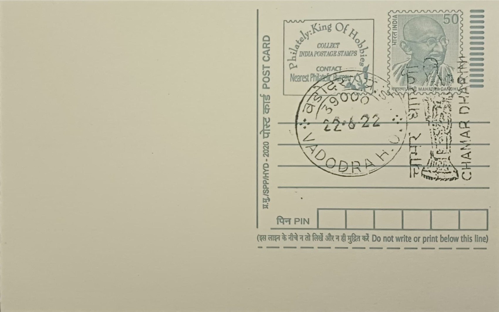

Chamar Dharini
ચામર ધારિણી


The name Chamar Dharini translates literally as 'the one who bears the chamara,' the long-handled fly-whisk traditionally made from yak-tail hair or similar fibre that signified rank and ceremonial attendance in ancient Indian courtly and religious life. In Jain iconographic convention, chauri-bearers flank the principal Tirthankara image in a triad, standing in service to the enlightened teacher rather than being objects of worship themselves. The bronze takes its identity entirely from this attendant role, and its survival as an independent, named figure in cataloguing reflects how distinctly recognisable its posture and attribute remain even when separated from the central icon it once accompanied.
The statue belongs to the Akota Bronzes, a hoard of roughly sixty-eight Jain metal images recovered from Akota, then a village and now a locality on the western bank of the Vishwamitri river within Vadodara city. Scholars regard the hoard as one of the most important bodies of evidence for early Jain bronze casting in western India, spanning a range from the Gupta period through the early medieval centuries, with the Chamar Dharini conventionally dated to around the 8th century CE. Its significance lies less in scale than in craftsmanship and documentary value, since dated and inscribed pieces within the same find have allowed art historians to build a chronology for Gujarati Jain bronze style that is still used as a comparative reference.
The hoard came to light in the area of Akota shortly before June 1951, surfacing during digging or construction activity, after which a University of Baroda professor brought several pieces to the attention of the archaeologist and Jain iconography specialist Umakant Premanand Shah. Shah subsequently acquired most of the images from local residents and arranged for their transfer to the Maharaja Sayajirao University of Baroda, after which they passed into the collection of the Vadodara Museum and Picture Gallery. The Chamar Dharini itself is a small cast bronze, modest enough to fit easily in the hand, showing the attendant figure standing on a lotus pedestal in the tribhanga or three-bend stance, with the fly-whisk raised in one hand in the gesture of service expected of such subsidiary temple figures.
Within the wider hoard, only a small number of images carry inscriptions or dates, so Shah established the chronology for most pieces, including the Chamar Dharini, through palaeographic and stylistic comparison with the few securely dated examples. This method placed the attendant figure in the milieu of the 8th century Gujarati idiom, a period in which Jain patrons in and around Akota commissioned bronze imagery with notable refinement of surface modelling and ornament despite the generally small dimensions of the castings. The Chamar Dharini is frequently cited alongside other named figures from the same find, such as seated and standing Tirthankara bronzes, as evidence of the range of subsidiary and principal imagery that Jain workshops in the region produced using the lost-wax technique.
The Akota Bronzes as a group remain principally housed and displayed at the Vadodara Museum and Picture Gallery, administered by the Gujarat state government's museums department, where the Chamar Dharini is exhibited among the sculpture holdings drawn from the same find. The collection continues to be referenced in surveys of Indian bronze sculpture, including standard art-history textbooks used in Indian universities, as a benchmark for early Jain metal imagery from western India. Visitors to the museum today encounter the Chamar Dharini not as an isolated curiosity but as one small, carefully preserved witness within a larger assemblage that has shaped how historians reconstruct the bronze-casting practice of early medieval Gujarat.
| Date of Introduction | January 16, 1989 |
|---|---|
| Address | Senior Postmaster, |
| Vadodara HO, | |
| Vadodara (dt.), Gujarat - 390001. |